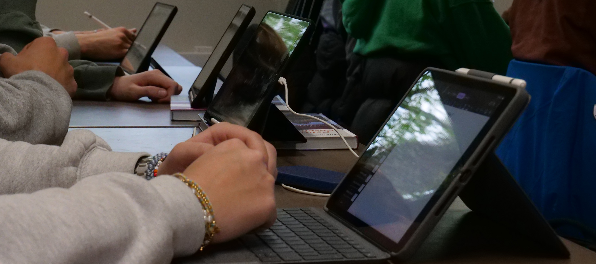

Wir verstehen unsere Schule als Kompass. Jeder soll seinen Weg finden.
Lehrerinnen und Lehrer wie auch die Sozialpädagogin des NCG wollen jedem Einzelnen helfen herauszufinden, was diese Schule ihr bzw. ihm bietet und was zu jedem Einzelnen besonders gut passt.
Zur Persönlichkeitsentwicklung bedarf es neben fachlichem Wissen einer Werteorientierung, denn erfolgreiches Lernen ist nur in einem Klima der Wertschätzung, der Achtung voreinander und der Anerkennung möglich.
Wir möchten, dass Schule als wertvoll erlebt wird. Alle sollen mit Freude ihre Fähigkeiten und Fertigkeiten entwickeln.
Selbstständigkeit, Eigenverantwortung und Teamfähigkeit sind wichtige Ziele unserer schulischen Arbeit.
Wir übernehmen Verantwortung für uns und die Gemeinschaft.
Respekt, Zusammenhalt und gegenseitige Unterstützung prägen unser Schulleben. Schülerinnen und Schüler, Eltern und Lehrkräfte gestalten unsere Schule gemeinsam.
Wir haben Anspruch an uns. Unsere Schule unterstützt jeden, seine bestmögliche Leistung zu erzielen.
Wir ermutigen zu Engagement und Experiment. Unsere Schule eröffnet vielfältige Perspektiven durch ein breites Angebot.
AGs, Projekte, Fahrten und kulturelle Angebote ermöglichen neue Erfahrungen und fördern individuelle Interessen.
Wir entwickeln unsere Schule stets weiter. Diesen Prozess gestalten Schülerinnen und Schüler, Eltern und Lehrkräfte gemeinsam.